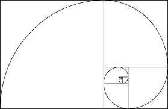
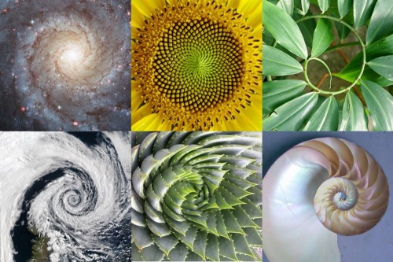
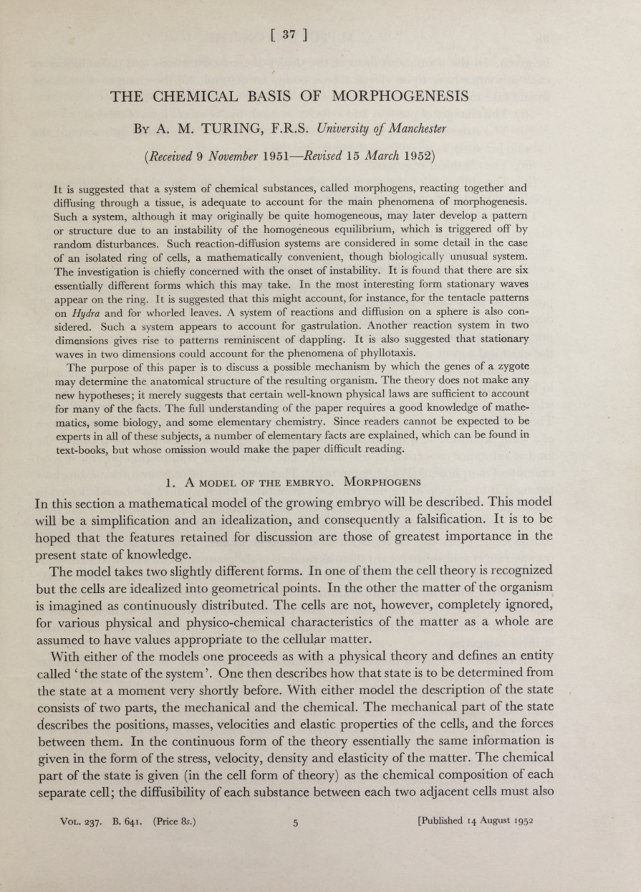
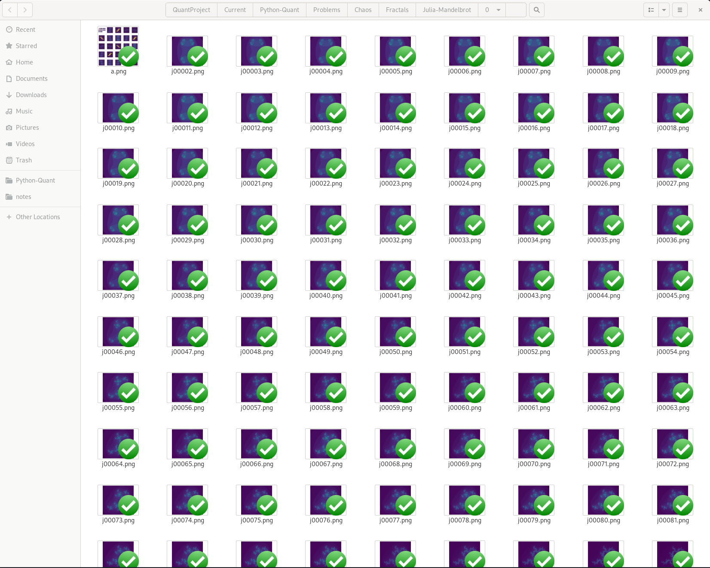
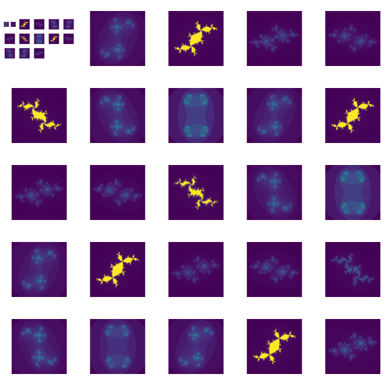

Math with Computers
Ryan Greenup & James Guerra
Created: 2020-08-27 Thu 02:13
Table of Contents
- 1. Follow along
- 2. Introduction
- 3. Fibonacci Sequence
- 4. Persian Recursion
- 5. Julia Sets
- 6. MandelBrot Set
1 Follow along
Scan the QR Code with your phone to follow along!
qrencode -o qrcode.png \
"https://ryangreenup.github.io/Python-Quant/Outline/Slides/Slides.html"
# "http://ryansnotes.org/x/00Slides/Slides/Slides.html"

2 Introduction
2.1 What we are doing (ish)
Our title is vague because our project is broad, which is awesome!
We are looking at the concept of computational thinking:
- How to solve mathematical problems computationally
- Investigating the methods implemented by other Computer Algebra Software
(CAS)
- With a primary focus on FOSS and Modern technologies (like Sympy🐍 and Julia)
- Investigate patterns, fractals, chaos and dynamical systems.
2.2 Technologies
| CAS Systems | Visualisation | |
|
Python - Sympy - Numpy Julia - SymEngine - Symata - DifferentialEquations.jl |
Maxima Reduce XCas/Gias |
Makie Plotly GNUPlot |


2.3 Some open Questions
Some of the problems that we wanted to work on:
- Can we model the patterns on animals?
- What is the relationship between Julia Sets, the Cantor set, the lorenz attractor and structures in nature.
- Can Julia Sets be extended to the quaternions
- Can we simulate things like the spiral of a nautilus shell?
- How is this related to the Fibonacci Sequence and \(\phi\)
2.4 Motivation
Many problems that look complex upon initial inspection can be solved trivially with CAS systems, learning how to effectively approach problems with that in mind can lead to new insights.
2.4.1 Iteration and Recursion
2.4.1.1 Series
Consider the following two series
let’s modify this for the sake of discussion:
2.4.1.2 Recursion
This can be expressed with recursion:
from sympy import *
def h(k):
if k > 2:
return f(k) * f(k-1)
else:
return 1
def f(i):
expr = 0
if i > 2:
return sqrt(i + f(i -1))
else:
return 1
2.4.1.3 Iteration
Another approach is iteration.
from sympy import *
def h(k):
k = k + 1 # OBOB
l = [f(i) for i in range(1,k)]
return prod(l)
def f(k):
expr = 0
for i in range(2, k+2):
expr = sqrt(i + expr, evaluate=False)
return expr/(k+1)
2.4.1.4 Recursion or Iteration
- Any function that can be defined by using iteration, can always be defined via recursion and vice versa
- For interpreted languages such R and Python, loops are usually faster.
2.4.1.5 Some Problems are tricky
Attacking a problem recursively isn’t always the best approach, consider the function \(g\left( k \right)\) from before:
- The sequence looks forward not back
So to implement recursion it must be restructured, however, this can be a bit clumsy:
2.4.1.5.1 Solving with Recursion
- \(f\) is now two variabled
- This can get very confusing with nested functions because of scope
from sympy import *
def h(k):
if k > 2:
return f(k, k) * f(k, k-1)
else:
return 1
def f(k, i):
if k > i:
return 1
if i > 2:
return sqrt((k-i) + f(k, k - i -1))
else:
return 1
2.4.1.5.2 Solving with Iteration
by using reversed this essentially stays the same.
from sympy import *
def h(k):
k = k + 1 # OBOB
l = [f(i) for i in range(1,k)]
return prod(l)
def f(k):
expr = 0
for i in reversed(range(2, k+2)):
expr = sqrt(i + expr, evaluate=False)
return expr/(k+1)
2.4.1.6 Variable Scope of Nested Functions
Using Python and Julia can be very confusing if you are used to using
R and bash.
2.4.1.6.1 Languages that pass variables up to parents
Functions defined in R and bash will pass variables up into
there parent function, for example consider the following:
2.4.1.6.2 R
outer <- function() {
inner()
print(x)
}
inner <- function() {
x <- 3
}
outer()
3
2.4.1.6.3 bash
outer() {
inner
echo "${x}"
}
inner() {
x=3
}
outer
3
2.4.1.6.4 Languages that don’t pass variables up to parents
whereas in Python you would need to make the variable an attribute of the function first (I’m not sure if this feature exists in Julia?):
def outer():
x = inner()
print(str(inner.x))
def inner():
inner.x = 3
outer()
function outer()
x=subfunction()
print(x)
end
function subfunction()
x=4
return x
end
outer()
3
2.4.1.6.5 Julia Scope of for loops
In Julia observe that the following will not work:
i=6
while i < 9
print(i)
i = i + 1
end
Where as wrapping it in a function will rectify the issue:
function blah()
i=6
while i < 9
print(i)
i = i + 1
end
end
blah()
Odd huh.
3 Fibonacci Sequence
3.1 Computational Approach
The Fibonacci Numbers are given by:
3.2 Defining Recursively in Python
def rec_fib(k):
if type(k) is not int:
Print("Error: Require integer values")
return 0
elif k == 0:
return 0
elif k <= 2:
return 1
return rec_fib(k-1) + rec_fib(k-2)
start = time.time()
rec_fib(35)
print(str(round(time.time() - start, 3)) + "seconds")
## 2.245seconds
3.3 Caching to Memory
from functools import lru_cache
@lru_cache(maxsize=9999)
def rec_fib(k):
if type(k) is not int:
print("Error: Require Integer Values")
return 0
elif k == 0:
return 0
elif k <= 2:
return 1
return rec_fib(k-1) + rec_fib(k-2)
start = time.time()
rec_fib(35)
print(str(round(time.time() - start, 3)) + "seconds")
new_start = time.time()
rec_fib(6000)
print(str(round(time.time() - new_start, 3)) + "seconds")
## 0.0seconds
## 8.3923e-05seconds
3.4 Solving Iteratively
def my_it_fib(k):
if k == 0:
return k
elif type(k) is not int:
print("ERROR: Integer Required")
return 0
i, n1, n2 = 1, 1, 1
if k <=2:
return 1
while i < k:
no = n1
n1 = n2
n2 = no + n2
i = i + 1
return (n1)
start = time.time()
my_it_fib(10**6)
print(str(round(time.time() - start, 9)) + "seconds")
## 6.975890398seconds
3.5 Solving With Julia is even Faster
function my_it_fib(k)
if k == 0
return k
elseif typeof(k) != Int
print("ERROR: Integer Required")
return 0
end
# Hence k must be a positive integer
i = 1
n1 = 1
n2 = 1
if k <= 2:
return 1
while i < k
no = n1
n1 = n2
n2 = no + n2
i = i + 1
end
return (n1)
end
@time my_it_fib(10^6)
## 0.000450 seconds
3.6 Exponential Generating Functions
3.6.1 Motivation
Consider the Fibonacci Sequence
Compare it to the following differential equation
Solving this we get:
Now consider:
By equating the above two equations we deduce that:
Solving \(c_1\) and \(c_2\) by the initial conditions gives:
Where: \(\varphi = \frac{1+ \sqrt{5} }{2} ≈ 1.61\ldots\) \(ψ = 1-\varphi = \frac{1- \sqrt{5} }{2} ≈ 0.61\ldots\)
3.7 The Golden Ratio \(\varphi\)
3.7.1 Where does it come from?
- \(\frac{F_{n+1}}{F_n}\) or \(\frac{a}{b} = \frac{a+b}{a}\)
- \(\sqrt{1+\sqrt{1+\sqrt{1+...}}}\)
- \(1+\frac{1}{1+\frac{1}{1+\frac{1}{1+...}}}\)
3.7.2 Why is it so interesting?


3.8 Image References:
Golden Rectangle: https://evstudio.com/functional-schematic-design-trick-use-the-golden-rectangle/
Spirals: https://blog.prototypr.io/golden-ratio-what-it-is-and-why-should-you-use-it-in-design-7c3f43bcf98
4 Persian Recursion
4.1 What is it?
This is a simple process that produces complex structured patterns in response to feedback and iteration.
- Decide on some four variable function to describe a set of colours, e.g.:
- \(f(w,x,y,z)=(w+x+y+z) \mod m\)
- Assign this value to the centre row and centre column of a matrix
- Repeat this for each newly enclosed sub-matrix.
4.2 Implementing with Python
4.2.1 Plan of Attack
This can be implemented computationally by defining a function that:
- takes the index of four corners enclosing a square sub-matrix of some matrix as input,
- proceeds only if that square is some positive real value.
- colours the centre column and row corresponding to a function of those four values
- then calls itself on the corners of the four new sub-matrices enclosed by the coloured row and column
4.2.2 Implementation
%matplotlib inline
# m is colours
# n is number of folds
# Z is number for border
# cx is a function to transform the variables
def main(m, n, z, cx):
import numpy as np
import matplotlib.pyplot as plt
# Make the Empty Matrix
mat = np.empty([2**n+1, 2**n+1])
main.mat = mat
# Fill the Borders
mat[:,0] = mat[:,-1] = mat[0,:] = mat[-1,:] = z
# Colour the Grid
colorgrid(0, mat.shape[0]-1, 0, mat.shape[0]-1, m)
# Plot the Matrix
plt.matshow(mat)
# Define Helper Functions
def colorgrid(l, r, t, b, m):
# print(l, r, t, b)
if (l < r -1):
## define the centre column and row
mc = int((l+r)/2); mr = int((t+b)/2)
## Assign the colour
main.mat[(t+1):b,mc] = cx(l, r, t, b, m)
main.mat[mr,(l+1):r] = cx(l, r, t, b, m)
## Now Recall this function on the four new squares
#l r t b
colorgrid(l, mc, t, mr, m) # NW
colorgrid(mc, r, t, mr, m) # NE
colorgrid(l, mc, mr, b, m) # SW
colorgrid(mc, r, mr, b, m) # SE
def cx(l, r, t, b, m):
new_col = (main.mat[t,l] + main.mat[t,r] + main.mat[b,l] + main.mat[b,r]) % m
return new_col.astype(int)
main(5,6, 1, cx)
4.3 The Output
4.3.1 6 Folds
Figure 4: Output produced by listing 4 with 6 folds
4.3.2 9 Folds
%config InlineBackend.figure_format = 'svg'
main(5, 9, 1, cx)
Figure 5: Output produced by listing 4 with 9 folds
4.3.3 Different Function
%config InlineBackend.figure_format = 'svg'
def cx(l, r, t, b, m):
new_col = (main.mat[t,l] + main.mat[t,r] + main.mat[b,l] + main.mat[b,r]-7) % m
return new_col.astype(int)
main(8, 8, 1, cx)
Figure 6: Output produced by listing 6 using \(f(w,x,y,z) = (w + x + y + z - 7) \mod 8\)
4.3.4 Different Function
%config InlineBackend.figure_format = 'svg'
import numpy as np
def cx(l, r, t, b, m):
new_col = (main.mat[t,l] + main.mat[t,r]*m + main.mat[b,l]*(m) + main.mat[b,r]*(m))**1 % m + 1
return new_col.astype(int)
main(8, 8, 1, cx)
Figure 7: Output produced by listing 6 using \(f(w,x,y,z) = (w + 8x + 8y + 8z) \mod 8 + 1\)
4.4 Emergence of Patterns
Many patterns that occur in nature can be explained by relatively simple rules that are exposed to feedback and iteration, this is a centreal theme of Alan Turing’s The Chemical Basis For Morphogenesis which we hope to look in the course of this research.

5 Julia Sets
5.1 Motivation
5.1.1 The Problem
- Consider the iterative process \(x \rightarrow x^{2}, \enspace x \in \mathbb{R}\),
- \(x\leq 1 \implies\) convergence
- \(x>1 \implies\) divergence
- Now Consider the iterative process \(z \rightarrow z^{2}, \enspace z \in \mathbb{C}\),
- \(\left\lvert z \right \rvert \leq 1 \implies\) convergence
- \(\left\lvert z \right \rvert >1 \implies\) divergence
5.1.2 The Generalisation
Although this seems trivial this can be generalised.
Consider:
\[f_{c}(z) = z^{2} + c, \quad \left\lvert c \right \rvert \left\lvert z \right \rvert \leq 1 \in \mathbb{C}\]
Every value on that plane will belong to one of the two following sets:
- \(E_{c}\)
- The set of values on the plane that tend to \(\infty\) (escapees)
- \(P_{c}\)
- The set of values on the plane that converge to zero (prisoners)
- Define \(Q^{(k)}_{c}\) to be the the set of values confirmed as prisoners after \(k\) iterations of \(f_{c}\)
- this implies \(\lim_{k \rightarrow \infty} \left[ Q^{(k)}_{c} \right] = P_{c}\)
\[ \ \\ \\ \] This is what must be used in practice.
5.2 Plotting the Sets
5.2.1 Implementing this
To implement this map a function over the elements of a matrix and map that matrix to the complex plane, this will produce a matrix of values (this is a picture!)
escape_test- applies iteration until divergence or convergence
- Divergence is concluded if \(z > \max{2, c}\), and convergence is conceded some number of iterations.
5.2.2 The Code
5.2.2.1 Defining Complex Values
from math import sqrt
def magnitude(z):
# return sqrt(z[0]**2 + z[1]**2)
x = z[0]
y = z[1]
return sqrt(sum(map(lambda x: x**2, [x, y])))
def cAdd(a, b):
x = a[0] + b[0]
y = a[1] + b[1]
return [x, y]
def cMult(u, v):
x = u[0]*v[0]-u[1]*v[1]
y = u[1]*v[0]+u[0]*v[1]
return [x, y]
5.2.2.2 Coding the Julia Set
%matplotlib inline
%config InlineBackend.figure_format = 'svg'
import numpy as np
def escape_test(z, num):
''' runs the process num amount of times and returns the count of
divergence'''
c = [0, 0]
count = 0
z1 = z #Remember the original value that we are working with
# Iterate num times
while count <= num:
dist = sum([n**2 for n in z1])
distc = sum([n**2 for n in c])
# check for divergence
if dist > max(2, distc):
#return the step it diverged on
return count
#iterate z
z1 = cAdd(cMult(z1, z1), c)
count+=1
#if z hasn't diverged by the end
return num
p = 0.25 #horizontal, vertical, pinch (zoom)
res = 200
h = res/2
v = res/2
pic = np.zeros([res, res])
for i in range(pic.shape[0]):
for j in range(pic.shape[1]):
x = (j - h)/(p*res)
y = (i-v)/(p*res)
z = [x, y]
col = escape_test(z, 100)
pic[i, j] = col
import matplotlib.pyplot as plt
plt.axis('off')
plt.imshow(pic)
# plt.show()
Now at this stage nothing’s remarkable, obviously it’s a circle, when we perform \(z \rightarrow z^{2}\) values converge for \(\left\lvert z \right \rvert \leq 1\).
But what if we try something like:
Figure 10: Circle of Convergence for \(f_{\frac{1}{4} + \frac{i}{2}}: z \rightarrow z^{2} + \frac{1}{4} + \frac{i}{2}\)
Figure 11: Circle of Convergence for \(f_{0}: z \rightarrow z^{2} - 1\)
5.2.3 Broader Investigation
5.2.3.1 Approach
Consider the equation: \[ f_{0.8 e^{\pi i \tau}}: z \rightarrow z^{2} + 0.8 e^{\pi i \tau}, \enspace \tau \in \mathbb{R} \]
If the value \(\tau\) is iterated over some range a series of snapshots can be created.
5.2.3.2 Code
Python is too slow, I had to instead use Julia and I produced and this how im implemented it:
# * Define the Julia Set
"""
Determine whether or not a value will converge under iteration
"""
function juliaSet(z, num, my_func)
count = 1
# Remember the value of z
z1 = z
# Iterate num times
while count ≤ num
# check for divergence
if abs(z1)>2
return Int(count)
end
#iterate z
z1 = my_func(z1) # + z
count=count+1
end
#if z hasn't diverged by the end
return Int(num)
end
# * Make a Picture
"""
Loop over a matrix and apply apply the julia-set function to
the corresponding complex value
"""
function make_picture(width, height, my_func)
pic_mat = zeros(width, height)
zoom = 0.3
for i in 1:size(pic_mat)[1]
for j in 1:size(pic_mat)[2]
x = (j-width/2)/(width*zoom)
y = (i-height/2)/(height*zoom)
pic_mat[i,j] = juliaSet(x+y*im, 256, my_func)
end
end
return pic_mat
end
To save the images I looped over the function and saved.
# * Use GR to Save a Bunch of Images
## GR is faster than PyPlot
using GR
function save_images(count, res)
try
mkdir("/tmp/gifs")
catch
end
j = 1
for i in (1:count)/(40*2*π)
j = j + 1
GR.imshow(make_picture(res, res, z -> z^2 + 0.8*exp(i*im*9/2))) # PyPlot uses interpolation = "None"
name = string("/tmp/gifs/j", lpad(j, 5, "0"), ".png")
GR.savefig(name)
end
end
save_images(1200, 1500) # Number and Res
5.2.3.3 Viewing the Results
5.2.3.3.1 What we Have
We just have a bunch of images now:

5.2.3.3.2 How to work with it
With ImageMagick and ffmpeg an animation can be produced, here’s how
# Use montage multiple times to get recursion for fun
montage (ls *png | sed -n '1p;0~600p') 0a.png
montage (ls *png | sed -n '1p;0~100p') a.png
montage -geometry 1000x1000 (ls *png | sed -n '1p;0~50p') a.png
# Use ImageMagick to Produce a gif (unreliable)
convert -delay 10 *.png 0.gif
# Use FFMpeg to produce a Gif instead
ffmpeg \
-framerate 60 \
-pattern_type glob \
-i '*.png' \
-r 15 \
out.mov
5.2.3.3.3 Montage

Figure 13: Various fracals corresponding to \(f_{0.8 e^{\pi i \tau}}\)
5.2.3.3.4 Gif

5.2.4 The Why?
- These shapes and patterns occur in nature all the time
- Math is somewhat the science of patterns
- It’s fun
6 MandelBrot Set
6.1 Motivation
Notice that some of prisoner sets were closed and some were open? A natural question arises:
for which values of \(c\) will they be open and for which values will they be closed?
It can be shown (and I intend to show it generally), that the distribution of these values is equivallent to the julia set where:
\[ f_{\gamma}: z -> z^{2} + \gamma \enspace : \enspace \gamma = z \]
6.1.1 Implementing This
Implementing this in Python is pretty much the same as before but some care needs to be taken with respect to storing \(z\) as a constant to use in place of \(c\)
%matplotlib inline
%config InlineBackend.figure_format = 'svg'
def mandelbrot(z, num):
''' runs the process num amount of times and returns the count of
divergence'''
count = 0
# Define z1 as z
z1 = z
# Iterate num times
while count <= num:
# check for divergence
if magnitude(z1) > 2.0:
#return the step it diverged on
return count
#iterate z
z1 = cAdd(cMult(z1, z1),z)
count+=1
#if z hasn't diverged by the end
return num
import numpy as np
p = 0.25 # horizontal, vertical, pinch (zoom)
res = 200
h = res/2
v = res/2
pic = np.zeros([res, res])
for i in range(pic.shape[0]):
for j in range(pic.shape[1]):
x = (j - h)/(p*res)
y = (i-v)/(p*res)
z = [x, y]
col = mandelbrot(z, 100)
pic[i, j] = col
import matplotlib.pyplot as plt
plt.imshow(pic)
# plt.show()
6.1.1.1 Output Set
6.1.2 Push the envelope
This is however fairly underwhelming, by using a more powerful language a much larger image can be produced, in Julia producing a 4 GB, 400 MP image will take about 10 minutes
6.1.2.1 Code
function mandelbrot(z, num, my_func)
count = 1
# Define z1 as z
z1 = z
# Iterate num times
while count ≤ num
# check for divergence
if abs(z1)>2
return Int(count)
end
#iterate z
z1 = my_func(z1) + z
count=count+1
end
#if z hasn't diverged by the end
return Int(num)
end
function make_picture(width, height, my_func)
pic_mat = zeros(width, height)
for i in 1:size(pic_mat)[1]
for j in 1:size(pic_mat)[2]
x = j/width
y = i/height
pic_mat[i,j] = mandelbrot(x+y*im, 99, my_func)
end
end
return pic_mat
end
using FITSIO
function save_picture(filename, matrix)
f = FITS(filename, "w");
# data = reshape(1:100, 5, 20)
# data = pic_mat
write(f, matrix) # Write a new image extension with the data
data = Dict("col1"=>[1., 2., 3.], "col2"=>[1, 2, 3]);
write(f, data) # write a new binary table to a new extension
close(f)
end
# * Save Picture
#------------------------------------------------------------
my_pic = make_picture(20000, 20000, z -> z^2) 2000^2 is 4 GB
save_picture("/tmp/a.fits", my_pic)
6.1.2.2 Visualisation of Set
I’ve taken some techniques from Astronomy and encoded the image as a FITS, which is basically a big matrix, it image is available-online but I can show you here:
xdg-open /home/ryan/Dropbox/Studies/2020Spring/QuantProject/Current/Python-Quant/Problems/Chaos/mandelbrot-400mpx.fits & disown
I tried to go bigger but AstroFits.JL would not write the file, I think this
has something to do with /tmp having a 15GB File restriction but I’m not sure.
6.2 GNU Plot
6.2.1 What is GNUPlot
It’s a Free (as in speech) visualisation library.
We can use it to map the time until convergence to the z-axis which also reveals interesting patterns.
All the following code was adapted from online sources, they correspond to an older release and newer versions of GNUPlot:
- have a recursion limit
- methods to loop functions
so one of our desires in this project is to visualise a much more detailed 3d model in GNUPlot by modifying the code to use iteration as opposed to recursion.
6.2.1.1 Mandelbrot
complex(x,y) = x*{1,0}+y*{0,1}
mandelbrot(x,y,z,n) = (abs(z)>2.0 || n>=200) ? \
n : mandelbrot(x,y,z*z+complex(x,y),n+1)
set xrange [-2:2]
set yrange [-2:2]
set logscale z
set isosample 240
set hidden3d
set contour
splot mandel(x,y,{0,0},0) notitle
6.2.1.2 Julia
complex(x,y) = x*{1,0}+y*{0,1}
julia(x,y,z,n) = (abs(z)>2.0 || k>=200) ? \
k : julia(x,y,z*z+complex(x,y),n+1)
set xrange [-1.5:1.5]
set yrange [-1.5:1.5]
set logscale z
set isosample 150
set hidden3d
set contour
a= 0.25
b= 0.75
splot mandel(a,b,complex(x,y),0) notitle
6.2.2 2d Mandelbrot
R = 2
k = 100
complex (x, y) = x * {1, 0} + y * {0, 1}
mandelbrot (z, z0, n) = n == k || abs (z) > R ? n : mandelbrot (z ** 2 + z0, z0, n + 1)
set samples 200
set isosamples 200
set pm3d map
set size square
splot [-2 : 2] [-2 : 2] mandelbrot (complex (0, 0), complex (x, y), 0) notitle
6.3 Again, why?
This self Similarity occurs all the time in nature, one of these is synthetic, can you spot it?